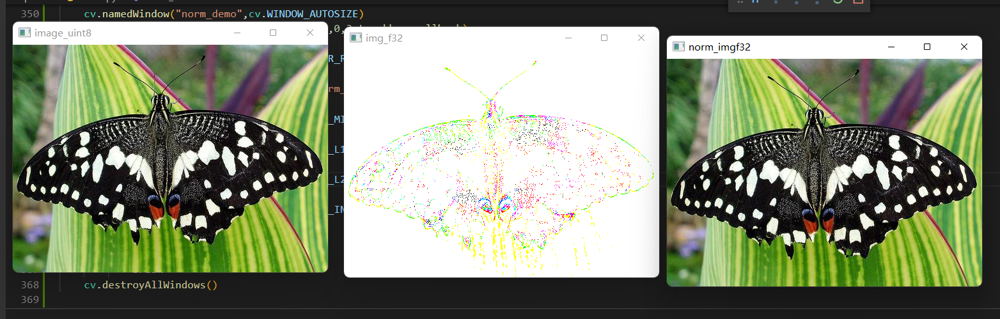
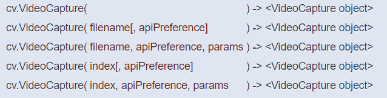

- EVENT_LBUTTONDOWN #鼠标左键按下
- EVENT_MOUSEMOVE #鼠标移动
- EVENT_LBUTTONUP #鼠标左键弹起
- 其他相关鼠标按键事件可去查
- def mouse_drawing(event,x,y,flags,Userdata):
- int event, int x, int y, int flags, void *userdata
- event表示鼠标事件
- (x, y)表示当前鼠标位置
- flags表示鼠标状态
- Userdata表示回调用户数据，可以为空
下面是用鼠标绘制直线，不清除已绘制的直线
cv.normalize( src, dst[, alpha[, beta[, norm_type[, dtype[, mask]]]]] ) -> dst
- src表示输入图像, dst表示输出图像
- alpha, beta 默认是1， 0，是归一化的区间值
- norm_type默认是NORM_L2,
- norm_type常用是NORM_MINMAX
- Imread读入默认是uint8, 转换为float32,通过imshow显示之前，必须归一化到[0~1]之间
 

cv.warpAffine(src, M, dsize[, dst[, flags[, borderMode[, borderValue]]]] ) -> dst
- src表示输入图像
- M 表示2x3变换矩阵
- dsize表示目标图像dst的大小
- 支持平移变换、放缩变换、旋转变换
旋转矩阵获取cv.getRotationMatrix2D
- Center表示旋转中心
- angle表示度数，大于零表示逆时针旋转
- scale表示放缩尺度大
- cv.flip(src, flipCode[, dst] ) ->dst
- cv.rotate(src, rotateCode[, dst] ) -> dst
- src表示输入图像
- flipCode支持0水平、1垂直，-1对角线翻转，
- rotateCode只支持旋转90°，180°，270°


- filename表示视频文件
- Index表示USB摄像头或者web camera的索引
- apiPreference = CAP_ANY意思自动决定第三方视频库如： cv.CAP_FFMPEG， cv.CAP_DSHOW
- VideoCaput的get方法: (….).get(以下参数)
- cv.CAP_PROP_FRAME_WIDT #宽
- cv.CAP_PROP_FRAME_HEIGHT #高
- cv.CAP_PROP_FPS #帧率
- cv.CAP_PROP_FOURCC #编码格式
- cv.CAP_PROP_FRAME_COUNT
cv.VideoWriter(
- filename, 保存文件名称
- fourcc, 编码方式
- fps, 帧率
- frameSize 视频帧大小,必须与实现大小相符
- [, isColor] ) ->